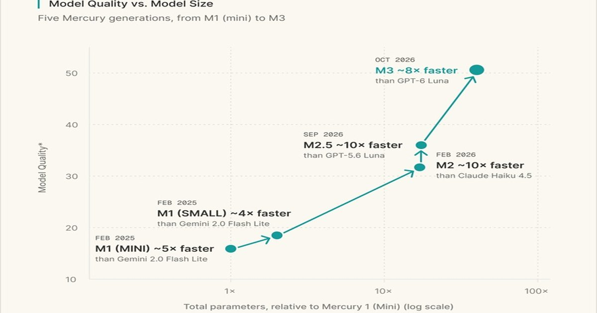

ИИ, который пишет не последовательно, а параллельно: диффузионная модель Mercury 3 в 6–8 раз быстрее GPT-6 Luna
Компания из Редвуд-Сити (США) представила диффузионную большую языковую модель (dLLM) Mercury 3, которая в 40 раз больше предшественницы Mercury 1, но при этом отличается высокой скоростью работы — свыше 1000 токенов/с.
В ряде тестов Mercury 3 превосходит GPT-6 Luna и Claude Haiku 5.5, работая при этом гораздо быстрее.
Источник изображения: Inception